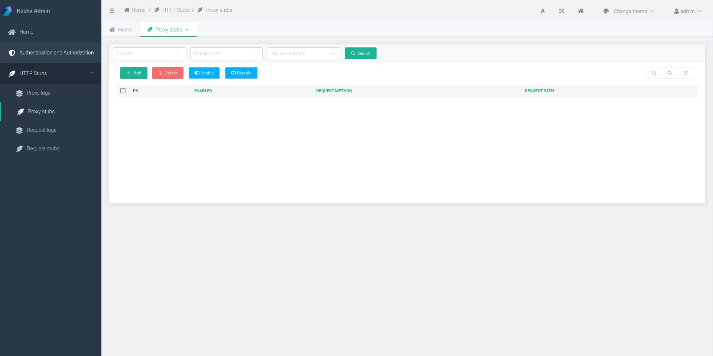
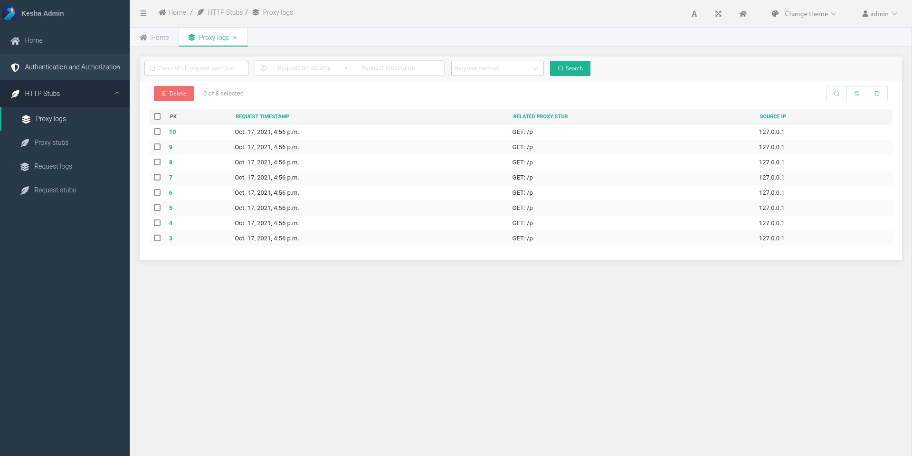
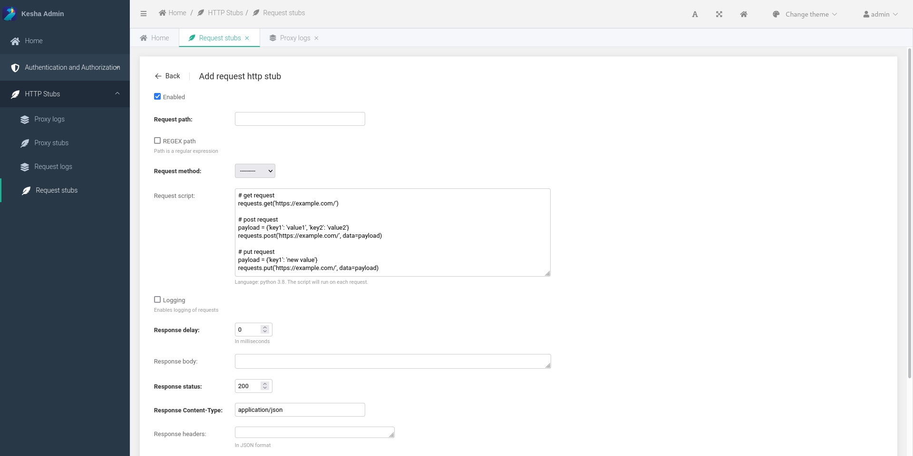

Kesha
Web-service for testing http requests and webhooks.
Project info:


Build:


Code quality:


Links:
- Repository: https://github.com/NUTtech/Kesha
- Documentation: https://nuttech.github.io/Kesha/
- Docker Hub: https://registry.hub.docker.com/r/nextuptechnologies/kesha
- Issue tracker: https://github.com/NUTtech/Kesha/issues
- Changelog: https://github.com/NUTtech/Kesha/blob/master/CHANGELOG.md
Components
- Database postgres.
- Database redis (for background celery-tasks).
- Python-app based on Django Web Framework.
Contributing
We welcome all contributions!
See CONTRIBUTING.md if you want to contribute.
You can start with issues that need some help
right now.
Screenshots


Quick Start
System requirements
- docker (https://www.docker.com/)
- docker-compose (https://github.com/docker/compose)
- make
(https://www.gnu.org/software/make/)
(all commands can be viewed by calling
makewithout parameters) - poetry (for development) (https://python-poetry.org/)
Local run
Quickstart (with Docker)
-
Clone the repo
git clone git@github.com:NUTtech/Kesha.git cd Kesha -
Build or download the docker image
for buildmake buildfor download
docker pull nextuptechnologies/kesha:latest -
Apply migrations and create a superuser:
make shell # inside the container python manage.py migrate # apply migrations python manage.py createsuperuser # create a superuser exit ## leave from the container -
Start the app and its dependencies
make runserver -
You will be able to access the service at
http://127.0.0.1:8042/
Start the project for development without Docker
-
Clone the repo and go to the project directory
git clone git@github.com:NUTtech/Kesha.git cd Kesha -
Install dependencies
poetry install -
Start databases
You can start databases in any other way# start postgres docker run \ --name postgres \ -d \ --rm \ -e POSTGRES_PASSWORD=kesha \ -e POSTGRES_USER=kesha \ --network host \ -v kesha_db:/var/lib/postgresql/data \ postgres # start redis docker run \ --name redis \ -d \ --rm \ --network host \ redis -
Setting required environment variables
export KESHA_DB_HOST=127.0.0.1 export KESHA_SECRET_KEY=NO_SECRET export KESHA_CELERY_BROKER_URL=redis://127.0.0.1Alternatively, you can create a local
.envfile with the variables -
Build static
poetry run python manage.py collectstatic --no-input -
Apply database migrations
poetry run python manage.py migrate -
Create a django superuser
poetry run python manage.py createsuperuser -
Start the django app
poetry run python manage.py runserver -
Start the celery worker
Run in a separate terminal windowpoetry run celery -A kesha worker -l INFO -c 4
Usage
First steps
Create an http-stub
- Go to
HTTP Stubs->Request stubs
- Click the
Addbutton - Fill in the required fields

- Click the
Savebutton
Logs
- Send a http-request to the created http-stub
- Go to
HTTP Stubs->Request logs
- Watch incoming requests :)
Proxy stubs
Create a proxy http stub
- Go to
HTTP Stubs->Proxy stubs - Click the
Addbutton - Fill in the required fields

- Click the
Savebutton
Logs
- Send a http-request to the created http-stub
- Go to
HTTP Stubs->Proxy logs - Watch incoming requests :)
Use request scripts
For using it
- Create an http stub (first steps)
- In the "request script" field, add a Python script 
About scripts
Request scripts support a secure subset of Python version 3.10.
Additionally, json and requests modules are available to the script.
As well as a special variable that stores the request body request_body.
Examples
Calling external services
# get request
requests.get('https://example.com/')
# post request
payload = {'key1': 'value1', 'key2': 'value2'}
requests.post('https://example.com/', data=payload)
# put request
payload = {'key1': 'new value'}
requests.put('https://example.com/', data=payload)
For more examples, see the official documentation https://requests.readthedocs.io/en/master/.
Parsing the request body in json format
For example, use the preset variable request_body.
request_body is a variable containing a body of the request received by Kesha.
parsed_data = json.loads(request_body)
requests.post(
'https://example.com/',
data={'user': parsed_data['request_user']}
)
Response templating
You can use the GET parameters of your request in the body and headers of the response.
To do this, in the body field or in the value of any header, add a string with
parameters in the format Your body with the GET parameter $arg1
Now on the request for example /stub/?arg1=42 there will be a response with
the body Your body with GET parameter 42
Version history
We follow Semantic Versions.
2.2.1 - Fix docs
Minor changes
- Fix docs #227
2.2.0 - Update dependencies
Updating dependencies
- bump django from 3.1.14 to 4.1 #226
- bump python from 3.8 to 3.10 #225
- bump mypy from 0.950 to 0.971 #212
- bump django-stubs from 1.9.0 to 1.12.0 #202
- bump ipython from 8.3.0 to 8.4.0 #192
- bump flake8-use-fstring from 1.3 to 1.4 #217
- bump celery from 5.2.6 to 5.2.7 #191
- bump django-simpleui from 2022.4.9 to 2022.7.29 #216
- bump celery-types from 0.12.0 to 0.13.1 #199
- bump requests from 2.27.1 to 2.28.1 #208
- bump django-environ from 0.8.1 to 0.9.0 #201
- bump uvicorn from 0.17.6 to 0.18.2 #207
- bump django-stubs-ext from 0.4.0 to 0.5.0 #203
- bump types-requests from 2.27.25 to 2.28.8 #222
- bump flake8-django from 1.1.2 to 1.1.5 #223
2.1.0 - Update dependencies
Minor changes
- Add uvicorn workers env variable #131
Updating dependencies
- bump ipython from 7.31.0 to 8.3.0 #184
- bump types-requests from 2.27.7 to 2.27.25 #183
- bump mypy from 0.931 to 0.950 #181
- bump pytest from 6.2.5 to 7.1.2 #179
- bump django-simpleui from 2022.1 to 2022.4.9 #175
- bump celery from 5.2.3 to 5.2.6 #174
- bump django-stubs-ext from 0.3.1 to 0.4.0 #171
- bump wemake-python-styleguide from 0.16.0 to 0.16.1 #160
- bump uvicorn from 0.17.0 to 0.17.6 #158
- bump celery-types from 0.10.0 to 0.12.0 #154
- bump flake8-annotations-coverage from 0.0.5 to 0.0.6 #149
- bump uvicorn from 0.16.0 to 0.17.0 #132
- bump types-requests from 2.27.5 to 2.27.7 #130
- bump celery from 5.2.2 to 5.2.3 #126
- bump pytest-mypy-plugins from 1.9.2 to 1.9.3 #125
2.0.0 - New major version
Important changes
- Add templating for response body and response headers #7
- Add status saving to the log #75
- Add proxy requests with a two-way log record #9
BACKWARD COMPATIBILITY BREAK:
- Renamed LogEntry model fields #9:
- body -> request_body
- date -> request_date
- headers -> request_headers
Minor changes
- Add type annotations #4
- Change logo #60
- Update wemake-style-guide #61
- Adds badge for CodeQL #19
- Fixes run CodeQL #18
Updating dependencies
- django from 3.1.13 to 3.1.14 #124
- ipython from 7.28.0 to 7.31.0 #119
- uvicorn from 0.15.0 to 0.16.0 #104
- django-debug-toolbar from 3.2.2 to 3.2.4 #109
- django-extensions from 3.1.3 to 3.1.5 #89
- psycopg2-binary from 2.9.1 to 2.9.3 #116
- mypy from 0.910 to 0.931 #121
- requests from 2.26.0 to 2.27.1 #118
- wemake-python-styleguide from 0.15.3 to 0.16.0 #107
- pytest-django from 4.4.0 to 4.5.2 #102
- celery-types from 0.8.2 to 0.10.0 #117
- django-simpleui from 2021.10.15 to 2022.1 #106
- celery from 5.1.2 to 5.2.3 #115
- restrictedpython from 5.1 to 5.2 #94
- types-requests from 2.25.11 to 2.27.5 #122
- lake8-use-fstring from 1.2.1 to 1.3 #79
- django-environ from 0.8.0 to 0.8.1 #76
- flake8-use-fstring from 1.2 to 1.2.1 #77
- pytest-mypy-plugins from 1.9.1 to 1.9.2 #73
- flake8-use-fstring from 1.1 to 1.2 #74
- celery-types from 0.8.1 to 0.8.2 #72
- django-environ from 0.7.0 to 0.8.0 #69
- django-simpleui from 2021.8.17 to 2021.10.15 #68
- pytest-django from 4.3.0 to 4.4.0 #33
- django-environ from 0.4.5 to 0.7.0 #54
- django-simpleui from 2021.3 to 2021.8.17 #48
- celery from 5.1.0 to 5.1.2 #38
- requests from 2.25.1 to 2.26.0 #41
- psycopg2-binary from 2.8.6 to 2.9.1 #34
- pytest from 6.2.4 to 6.2.5 #51
- ipython from 7.23.1 to 7.28.0 #55
- pytest-cov from 2.12.0 to 3.0.0 #56
- celery from 5.0.5 to 5.1.0 #21
- pytest-django from 4.1.0 to 4.3.0 #13
- pytest-cov from 2.11.1 to 2.12.0 #16
1.2.0 - The parrot's name is now Kesha!
1.1.0 - Disable logs by default
Important changes
- Disable the log for a specific stub #110
Updating dependencies
- django-simpleui from 2021.1.1 to 2021.3 #106
- django-extensions from 3.1.0 to 3.1.1 #101
- pytest-cov from 2.10.1 to 2.11.1 #96
- pytest from 6.2.1 to 6.2.2 #97
- uvicorn from 0.13.2 to 0.13.4 #105
- django from 3.1.4 to 3.1.7 #104
- flake8-annotations-coverage from 0.0.4 to 0.0.5 #94
- ipython from 7.19.0 to 7.21.0 #107
1.0.1 - Improving docs
Important changes
- Improving docs #91
Updating dependencies
- django-simpleui from 2020.9.26 to 2021.1.1 #80
- pytest from 6.1.2 to 6.2.1 #88
- uvicorn from 0.12.3 to 0.13.2 #89
1.0.0 - First stable release
New functionality
- Custom script for each request #70
Bug fixes
- Fix absolute request url in HttpStubAdmin with regex #78
Minor improvements
0.1.10
- Fixed issue with Vue breaking on log entries #79
0.1.9
- Fixed enormously long logs page loading time #75
- Added django-extensions and ipython for ease of development #74
0.1.8
- Fixed regex stubs with query args #69
0.1.7
- Fix build #66
0.1.6
- Changed max_length for LogEntry.path #65
- Move django secret key to env vars #61
- Added reading environment from the .env file #60
0.1.5
- Add PARROT_ALLOWED_HOSTS env var #63
0.1.4
- Remove inline logs from http-stub page #58
0.1.3
- Translate into English the popup text #50
- Limit the maximum number of query log entries #16
- Add a request url to the stub edit page #35
- Updates lots of dependencies (issues)
0.1.2
0.1.1
This is the first public version of the project. Happy Birthday Parrot!
How to contribute
First steps
- Fork our repo, here's the guide on forking
- Clone your new repo (forked repo) to have a local copy of the code
- Apply the required changes!
- Send a Pull Request to our original repo. Here's the helpful guide on how to do that
Dependencies
We use poetry to manage the dependencies.
To install them you would need to run install command:
poetry install
To activate your virtualenv run poetry shell.
Two magic command
Run make autotests or make lint to run checks in docker/
Tests
We use pytest and flake8 for quality control.
We also use wemake_python_styleguide.
To run all tests:
pytest
To run linting:
flake8 .
Before submitting
Before submitting your code please do the following steps:
- Run
pytestto make sure everything was working before - Add any changes you want
- Add tests for the new changes
- Edit documentation if you have changed something significant
- Update
CHANGELOG.mdwith a quick summary of your changes - Run
pytestagain to make sure it is still working - Run
flake8to ensure that style is correct
You can run everything at once with make autotests,
run make help for more details.
Notes for maintainers
This section is intended for maintainers only. If you are not a maintainer (or do not know what it means), just skip it. You are not going to miss anything useful.
Making new release
Releases are shipped using git-flow https://danielkummer.github.io/git-flow-cheatsheet/index.html
This command has to be run only once to set up git flow, keep default value for all parameters.
git flow init
-
Update master and develop branches
git checkout develop && git pull git checkout master && git pull -
Start a new release
git flow release start <VERSION><VERSION>- new release version -
Update CHANGELOG.md
-
Update project version
poetry version <VERSION> -
Commit project configuration with the new version
git commit -m "bump version" pyproject.toml -
Finish building a release
git flow release finish <VERSION> -
Push all the changes into the repository
git push origin master develop --follow-tags -
Create a new release specifying pushed tag